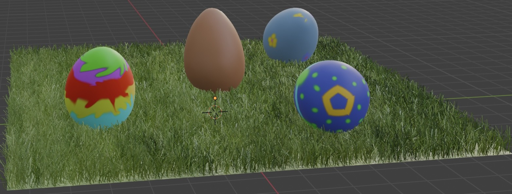
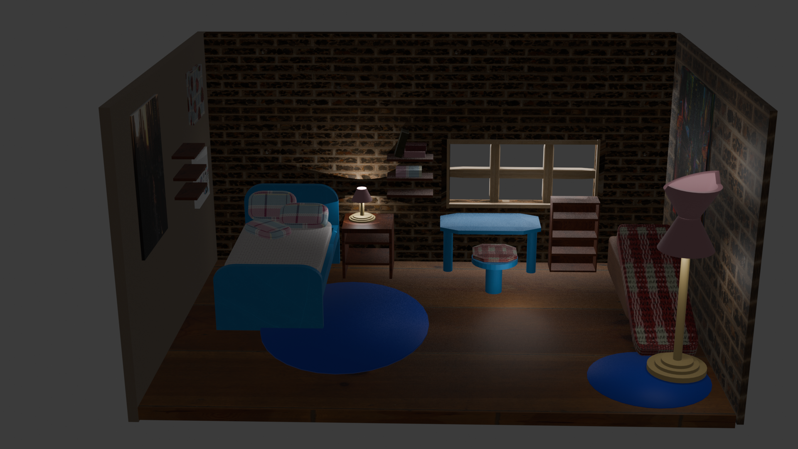

My works
Easter Eggs
This project of making easter eggs in Blender was a nice challenge and experience utilising new tools in Blender. This was an opportunity to experiment with lighting amd placemnt to get the best highlights and shadows. As well as using texture paint to paint directly onto the objects instead of using a texture.
Lighting chair
Making this wooden chair was based off a childhood chair and a mix of wooden chair designs from memory. This mainly was used for a lighting task. It was a challenge to use different points of lighting to highlight certain areas and casts shadows on other areas.
Toy train
The toy train was the first object I modelled in Blender in terms of being based off an actaul object or reference image. This project provided the opportunity to utilise bevel and using more editing tools to alter the shape of the objects to fit the design of a train.
Low poly interior
I modelled this interior room in Maya. This was my first experience using new tools in Maya and scaling items to fit in the scene and look natural. This was my first attempt at an interior scene without a reference image.
Scene Render
This interior scene render was mainly inspired by my own room, and I tried to add some touches that gave a New York City vibe, with the exposed brick walls and varying sizes of wall art and framed images. This scene was made through Blender software, using textures from external webistes and texture painting.